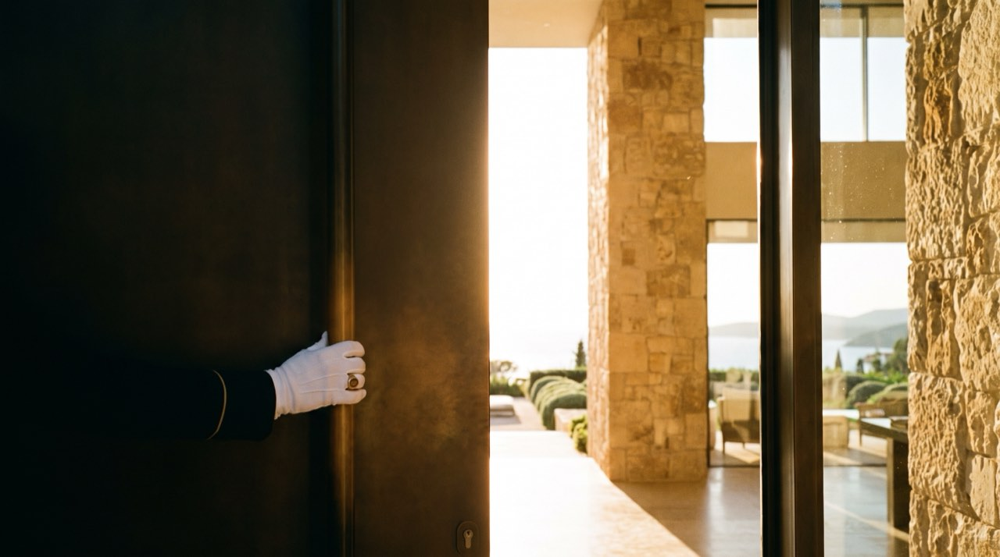

Estate representation
Full marketing production: photography, drone, measured plans, a standalone property site, and a properly directed film with a location scout and a shooting schedule rather than a phone on a gimbal.
Estates & architectural properties
Estate and architectural property representation. Every listing gets professional photography, film, floor plans and a dedicated page, because your buyer is comparing four properties on an iPad at eleven at night.

Services
Fewer listings, taken seriously. We turn down more instructions than we accept.
Full marketing production: photography, drone, measured plans, a standalone property site, and a properly directed film with a location scout and a shooting schedule rather than a phone on a gimbal.
For sellers who want discretion. A private network of qualified buyers and no public listing at any point.
Including access to properties never publicly listed. We represent perhaps twelve buyers at a time, deliberately.
Producing agents: full marketing production on every listing you take, a real split, and no desk fees. Have a look at what we'd give you.
Results
"Two other brokerages showed me a comparative market analysis. Ellery showed me the actual page my house would live on, with the film already storyboarded. That was the decision."
Katherine V. · Seller, architectural estate
Process
Production is complete before the listing goes live. A film shot after the price drops is a film nobody watches.
A considered opinion of value with the comparable evidence behind it, and a frank view on timing.
Photography, film, drone, floor plans and copy. Usually ten to fourteen days, and it is the reason the rest works.
A dedicated property page, the private network first, then public portals. Sequenced deliberately, not simultaneously.
Qualified buyers only, and we manage inspection and appraisal so the deal survives to closing.
From the shot list
The stills are frames from the film, not a separate shoot. The shot list is the same for both.
A valuation conversation commits you to nothing and is genuinely useful even if you decide to stay put for another five years.
Producing agents: ask about our marketing production and split structure.